missão
Otimizar sistemas energéticos através da customização de produtos e serviços.
Analisamos a fundo as particularidades e necessidades dos nossos clientes, personalizando os projetos e assim otimizando a geração de energia.
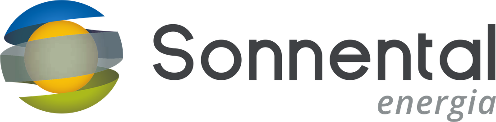
a nossa marca
Sonnental vem do alemão e quer dizer vale do sol. O símbolo é um sol envolvido por uma fita em espiral, em três cores.
Esta página conta de onde a marca veio, o que cada parte significa, como usar e o que a Sonnental se propõe a fazer. Ao lado, a esfera de 2026, que é a referência para qualquer versão física do símbolo.
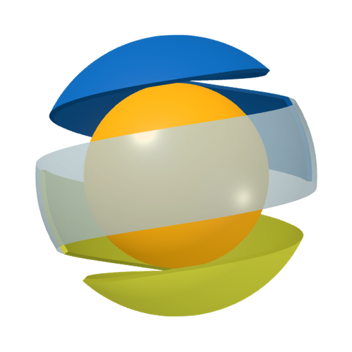
Arraste para girar. A fita é uma peça só: sai da calota azul, passa por trás, vira a faixa cinza na frente e termina na calota verde.
O estudo que deu origem à marca, de 2018, partiu do lugar onde a empresa nasceu.
O Vale do Taquari é feito de montanhas, planícies e relevos, com clima de serra e belas vistas. O estudo dizia que o sol que bate nas cidades traz o calor e a energia que permeiam o povo, mas que esse potencial ainda não era conhecido nem explorado. As energias renováveis davam a casas e indústrias a chance de ter independência energética e gastar menos.
O desenho junta seis ideias: terra, sol, ventos, água, humano e tecnologia. A proposta era trazer os elementos naturais para dentro da marca junto com uma tecnologia que integrasse as pessoas e abrisse possibilidades de crescimento.
O sol fica no centro. A fita em volta dele representa, nas palavras do estudo, a envolvência e a sinergia com o todo: um abraço.
Essa identidade age como uma visionária da tecnologia para o mundo das pessoas mais sinérgicas, onde a transparência da tecnologia não interfere no ecossistema do planeta.
O nome foi escolhido pensando num negócio local que pudesse, um dia, sair do país sem precisar mudar de nome.
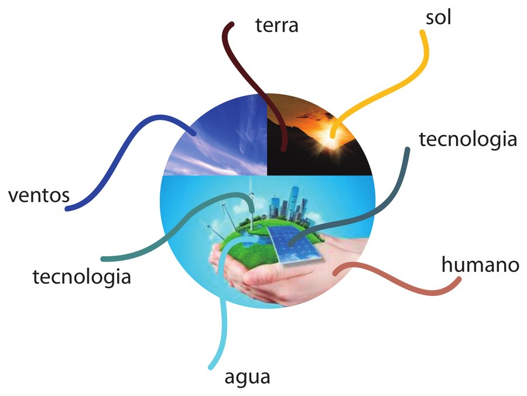
O símbolo nasceu em três dimensões, e só depois virou desenho plano.
Quem criou a marca foi o designer Lorenzo, o Lore. O estudo de 2018 guarda um esboço a lápis e o modelo que ele fez no Rhinoceros, um programa de desenho 3D.
A construção é simples de imaginar. Pegue uma esfera oca com um sol dentro. Agora descasque essa esfera como quem descasca uma maçã, tirando uma tira em espiral. O que sobra é uma fita só, contínua: começa na calota de cima, dá a volta por trás, passa na frente como a faixa do meio, dá outra volta por trás e termina na calota de baixo.
O estudo explicava a escolha: uma marca em três dimensões fica mais palpável e aproxima a empresa do cliente.
Depois o modelo foi planificado no Illustrator e colorido. As partes escuras que aparecem na logo são o lado de dentro da fita, visto pelas aberturas.
O arquivo 3D original se perdeu com o tempo. Em novembro de 2026 a esfera foi refeita a partir das medidas da marca de 2018, agora perfeitamente redonda e com a fita na mesma largura em toda a volta. Essa esfera é a referência oficial para qualquer réplica física do símbolo. No visualizador do topo dá para alternar entre ela e a reconstrução do modelo original, feita a partir da única imagem que sobrou dele e mostrada nas cores provisórias do programa.
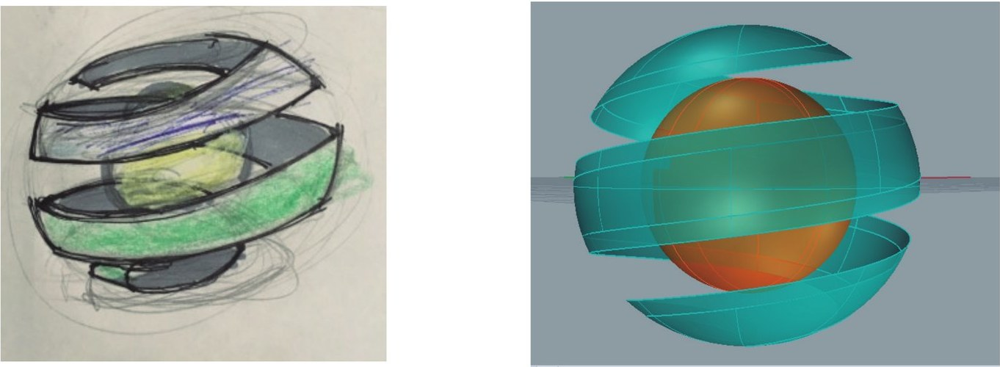
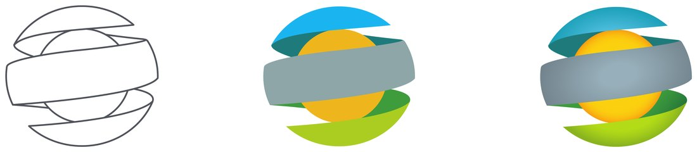
O símbolo é o mesmo desde o começo. O que mudou foi o letreiro, a assinatura e o acabamento.
A Sonnental começa a trabalhar em 2018. O estudo da marca usa a assinatura “energy solutions” e o primeiro manual, “energia renovável”. O letreiro é em Open Sans, com azul e verde mais claros. A frase da época: “Fazendo o futuro, agora.”
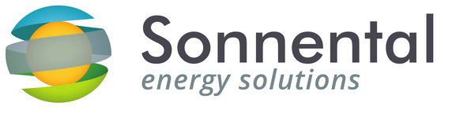
O nome é redesenhado em Ginora Sans e a assinatura passa a ser só “energia”. O projeto de revisão compara a marca anterior com a corrigida e anota três pontos do letreiro: dois tipos de letra “a”, falta de fechamento e simetria. As cores ficam mais sóbrias e viram as quatro do manual que vale até hoje.
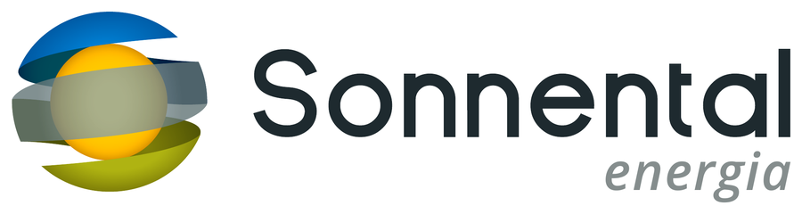
Duas reuniões, em 26 de maio e 28 de junho, definem qual é o negócio da Sonnental e escrevem a missão, a visão e os valores. Em 2023 o texto é publicado para a equipe e os clientes.
As curvas do símbolo são refeitas, porque o desenho plano não batia bem com a esfera. É a versão em uso.
O símbolo é reconstruído em 3D como uma esfera perfeita, com a fita na mesma largura em toda a volta. Ela vira a referência para qualquer versão física da marca: a esfera impressa do tamanho de uma bola de futebol, com 22 cm de diâmetro, e, no futuro, uma escultura ou uma aplicação na fachada.
Também se testou levar essa esfera para a marca plana. Vista de frente, ela perde a leitura de “S” que o símbolo ganhou com o tempo, então a decisão foi manter a marca 2D de 2025.
Na mesma revisão, o azul do degradê de 2025, que tinha ficado mais claro e acinzentado, voltou aos tons do arquivo de 2019. Desenho, versão chapada e cores oficiais continuam os mesmos.
A marca em uso é a versão de 2025. Aqui estão as regras do Manual de Identidade Visual, resumidas, e todas as aplicações da marca.
A versão com volume e degradê é a principal. Use em telas e em impressos, sempre sobre fundo branco.
A versão sem degradê serve para aplicar sobre fotos e em materiais como estampas e adesivos. Sobre azul, cinza ou verde, o logo vai todo em branco.
6 × 6,5 mm para o símbolo sozinho.
26 × 6 mm para o logo com o nome. Abaixo disso perde leitura.
Deixe um espaço livre em volta. A medida é o diâmetro do sol do símbolo: uma medida inteira em volta do logo com o nome, meia medida em volta do símbolo sozinho.
Ginora Sans no nome. Open Sans em negrito itálico na assinatura “energia”.
As quatro cores estão na seção de significado, com o código de cada uma. Toque no código para copiar.
Para qualquer peça física do símbolo, como impressão 3D, escultura ou fachada, use a esfera de 2026: redonda, com a fita na mesma largura em toda a volta. No papel e na tela, vale a marca 2D de 2025.

Versão principal, com degradê. Para telas e impressos sobre fundo branco.
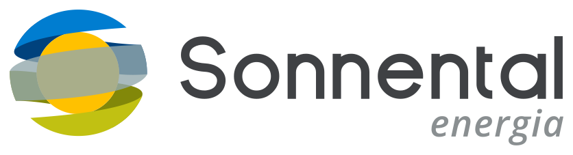
Sem degradê. Para aplicar sobre fotos e em estampas e adesivos. A faixa cinza continua translúcida, deixando o sol aparecer.
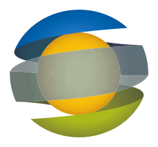
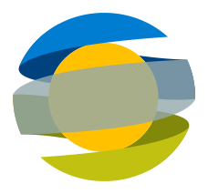
Com degradê ou chapado, quando o nome já aparece por perto ou o espaço é pequeno, como em ícones e perfis.
Em contorno sobre o azul, o cinza ou o verde da marca. Preenchida sobre fundos escuros ou fotos.
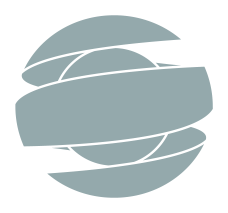
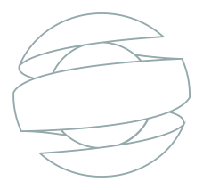
Preenchida ou em contorno, para carimbo, gravação, bordado e impressão em uma tinta.
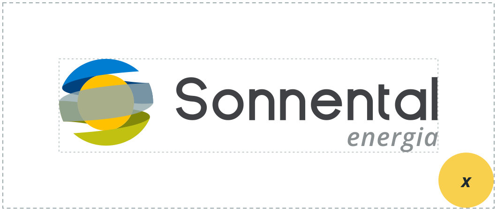
Uma medida x livre em volta. O x é o diâmetro do sol.
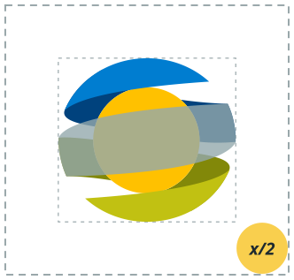
Meia medida x livre em volta do símbolo sozinho.
Escolha a versão, confira ao lado e baixe no formato que precisar. SVG e PDF são vetor (não perdem qualidade em nenhum tamanho); PNG é imagem com fundo transparente.
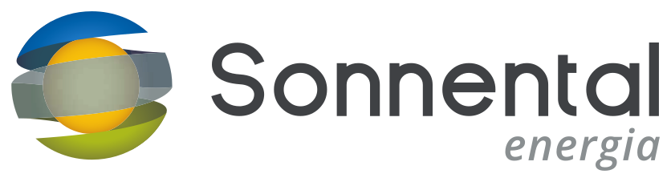
Versão principal. Telas e impressos sobre fundo branco.
Para trabalhar com a marca usando qualquer IA, baixe o guia da marca, anexe na conversa e peça para seguir as regras dele.
A descrição completa da geometria, para quem precisar refazer a esfera em qualquer programa de 3D ou pedir a outra IA. O kit de construção, na seção de arquivos, traz tudo isto mais as tabelas e um script pronto.
A esfera é uma casca oca com um sol (uma esfera menor) no centro. Da casca foi retirada uma tira em espiral, como quem descasca uma maçã. O que sobra é uma fita única e contínua: começa na calota de cima, dá voltas em torno do sol e termina na calota de baixo. As calotas são as duas pontas da fita, e não peças inteiras. Girando 180° em torno do eixo que vai da frente para trás, o símbolo fica igual.
| Item | Valor |
|---|---|
| Esfera | perfeita, raio externo R. Na bola impressa, R = 110 mm (22 cm de diâmetro) |
| Casca | 4 mm de espessura em R = 110 (R/27,5) |
| Sol | esfera concêntrica de raio 0,66·R (diâmetro 145 mm) |
| Fita | 37° de latitude de largura, constante em toda a volta |
| Fenda | 21° de latitude, constante, fechando em ponta viva nas duas calotas |
| Passo | 58° de latitude por volta: K = 58/360 = 0,16111 |
| Extensão da fenda | θ de −185° a 545° (2,03 voltas) |
Bordas da fenda, em graus:
1. Base da fita da volta de cima, θ ≤ 185: φ_sup(θ) = K·θ − 18,5 2. Topo da fita da volta de baixo, θ ≥ 175: φ_inf(θ) = K·(θ − 360) + 18,5 3. Borda da calota de cima, θ > 185: até θ_A = 389,655 φ_sup(θ) = K·(θ − 360) + 39,5 até θ_B = 439,655 φ_sup(θ) = 48,306 − (K/100)·(θ_B − θ)² até θ = 545 φ_sup(θ) = 48,306 (em θ = 545 as duas bordas valem 48,306: a fenda fecha em ponta) 4. Metade de baixo, por simetria, θ < 175: φ_inf(θ) = −φ_sup(360 − θ)
Peças para impressão, cada uma de uma cor:
| Peça | Região | Cor |
|---|---|---|
| Cinza | só a faixa da frente: θ de −100° a +100°, entre φ_sup(θ) e φ_inf(θ+360). Cortes retos em θ = ±100°, 10° atrás das laterais | #99A7AA, de preferência translúcido |
| Azul | calota de cima e a volta da fita que passa por trás, em cima | #045AA0 |
| Verde | a volta de baixo que passa por trás e a calota de baixo | #BFBF32 |
| Sol | esfera de 0,66·R | amarelo-ouro (#F7BF13) |
Conferência com R = 110 mm: casca inteira 428,1 cm³; peças azul 163,1, cinza 102,0 e verde 163,1 cm³.
No Rhino ou Grasshopper: pontos pelas fórmulas, Interpolate Curve nas bordas, Split na superfície e espessura para dentro. No Blender: rode o script ou importe os STL; para editar, Solidify de 4 mm para dentro. No Fusion 360 ou SolidWorks: importe os pontos como spline 3D e use Split Body. No OpenSCAD: o sólido de corte vira um polyhedron dentro de difference().
Modele em 3D a esfera do símbolo da Sonnental. É uma casca esférica oca, raio externo R = 110 mm, espessura 4 mm, com uma esfera maciça concêntrica de raio 72,6 mm dentro (o sol). Da casca é retirada uma fenda em espiral, como a casca de uma maçã descascada, deixando uma fita única de 37 graus de latitude de largura, constante. A fenda tem 21 graus de latitude, constante. Use θ como azimute (0 na frente, que é −Y, crescendo para a direita de quem olha, passando de 360) e φ como latitude. A fenda vai de θ = −185 a 545 graus. Borda de cima da fenda: φ = 0,16111·θ − 18,5 para θ ≤ 185. Borda de baixo: φ = 0,16111·(θ − 360) + 18,5 para θ ≥ 175. Na última volta, a borda da calota de cima segue φ = 0,16111·(θ − 360) + 39,5 até θ = 389,655, depois φ = 48,306 − 0,0016111·(439,655 − θ)² até θ = 439,655, e fica em 48,306 até θ = 545, onde a fenda fecha em ponta. A metade de baixo é simétrica: φ_inf(θ) = −φ_sup(360 − θ) para θ < 175. Divida a casca em 3 peças: cinza é a faixa da frente entre θ = −100 e +100; o resto em cima é azul (#045AA0) e embaixo verde (#BFBF32). Volumes de conferência: casca 428,1 cm³, peças 163,1 / 102,0 / 163,1 cm³.
O jeito Sonnental de pensar e trabalhar, como foi publicado em 2023.
Otimizar sistemas energéticos através da customização de produtos e serviços.
Analisamos a fundo as particularidades e necessidades dos nossos clientes, personalizando os projetos e assim otimizando a geração de energia.
Democratizar a energia, produzindo bem-estar e ganhos econômicos para clientes, empresa e sociedade.
Assessoramos nossos clientes, trazendo um entendimento completo sobre sua forma de consumo e quais as melhores estratégias para reduções de custos.
Nos preocupamos em desenvolver pessoas e buscamos isso através da excelência no nosso trabalho.
As reuniões de 2021 começaram por uma pergunta: qual é o nosso negócio? A resposta deixou de ser um produto, como painéis solares, e passou a ser uma solução.
Duas anotações daquelas reuniões ajudam a entender o espírito. A primeira: valores não dizem o que vamos fazer, dizem como. A segunda: estar disposto a perder uma venda por causa dos nossos valores e da nossa missão.
O plano de 2018 dividia a empresa entre três sócios. A marca foi criada pelo designer Lorenzo.
Projeto elétrico, supervisão das instalações, manutenção e busca de novas tecnologias.
Abertura e burocracia da empresa, financeiro e pagamento de fornecedores.
Vendas para pessoas e para empresas e negociação com os clientes.
O mesmo plano descrevia o problema que a empresa queria resolver: as pessoas do vale não conheciam a possibilidade de gerar a própria energia, e faltava quem explicasse bem.
Hoje a Sonnental fica em Estrela, no Rio Grande do Sul, e tem Guilherme e Willian como sócios.